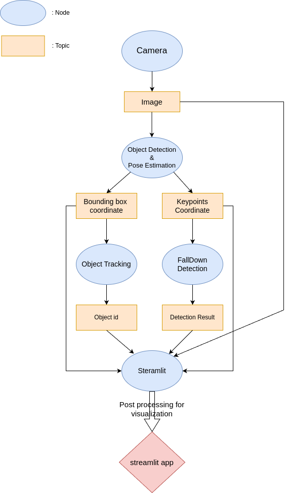

Project Overview
This project presents a ROS2-based real-time monitoring system that detects worker falls using CCTV footage. The system is composed of multiple ROS2 nodes that operate independently but communicate efficiently through topic-based publishing and subscribing. These include camera streaming, object detection with keypoints, multi-object tracking, and a custom fall detection module.
To visualize system performance and monitor node statuses, a Streamlit-based web dashboard was developed. The dashboard aggregates data across nodes in real time and provides alerts for hazardous situations. It also shows a live view of the working status of each AI pipeline component.
Features
- Modular ROS2 architecture with separate nodes for detection, tracking, and analysis
- Real-time fall detection using pose estimation and deep learning models
- Streamlit dashboard with synchronized visualization and status indicators
Technologies Used
ROS2, Python, OpenCV, PyTorch, Streamlit, Docker
Repository
Demo

Streamlit-based real-time monitoring dashboard
System Pipeline
Modular ROS2 Node Architecture